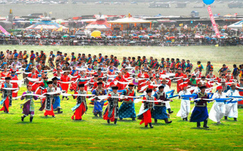

每年农历6月初四开始的为期5天的那达慕，是蒙古族人民的盛会 。那达慕大会的内容主要有摔跤、赛马、射箭、套马、下蒙古棋等民族传统项目，有的地方还有田径、拔河、篮球 等体育项目。 
每年七、八月牲畜肥壮的季节举行的'那达慕'大会，是人们为了庆祝丰收而举行的文体娱乐大会。每年夏、秋季节举行。'那达慕'，蒙语的意思是娱乐或游戏。大会期间，各地农牧民骑着马，赶着车，带着皮毛、药材等农牧产品。成群结队的汇集于大会的广场。并在会场周围的绿色草原上搭起白色蒙古包。'那达慕'大会上有惊险刺激的赛马、摔跤，令人赞赏的射箭
，有争强斗胜的棋艺，有引人入胜的歌舞。赛马
 也是大会上重要的活动之一。比赛开始，骑手们一字排开，个个扎着彩色腰带，头缠彩巾
，洋溢着青春的活力。赛马的起点和终点插着各种鲜艳的彩旗，只等号角长鸣，骑手们便纷纷飞身上鞍，扬鞭策马，一时红巾飞舞，如箭矢齐发。前五名到达终点者，成为草原上最受人赞誉的健儿。射箭、摔跤等比赛也吸引着众多牧民。
也是大会上重要的活动之一。比赛开始，骑手们一字排开，个个扎着彩色腰带，头缠彩巾
，洋溢着青春的活力。赛马的起点和终点插着各种鲜艳的彩旗，只等号角长鸣，骑手们便纷纷飞身上鞍，扬鞭策马，一时红巾飞舞，如箭矢齐发。前五名到达终点者，成为草原上最受人赞誉的健儿。射箭、摔跤等比赛也吸引着众多牧民。
那达慕已有近八百年的历史，一直在锡林郭勒草原上流传和发展，深受各族群众的喜爱，成为了蒙古族文化传统的重要载体。那达慕上的各项活动是力与美的显现、体能和智慧的较量、速度和耐力的比拼，比较全面地展示了在草原上生活的群众的综合素质。那达慕是具有广泛群众性和娱乐性的传统民俗文化活动，具有广泛、深刻的文化内涵，反映了蒙古民族的价值观和审美观。发掘、抢救和保护那达慕，对中国体育史，乃至世界体育史的丰富和完善都有着
价值。因为国家非常重视非物质文化遗产的保护，在2006年5月20日，该民俗经国务院批准列入第一批国家级非物质文化遗产名录。